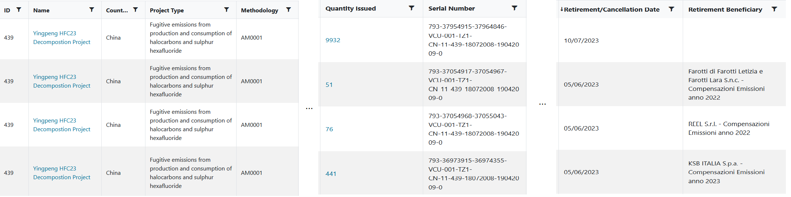

Carbon credits quantify the greenhouse gas (GHG) emission reductions or removals achieved by projects or programs around the world that mitigate climate change. Carbon credit standards set rules and requirements to ensure the quality and integrity of these credits. Standards provide methodologies for measuring, monitoring and verifying the GHG benefits of different types of activities, such as renewable energy, forest conservation, or waste management.
In this post, I explore how existing carbon credit standards develop and maintain methodologies, as well as how decentralized governance mechanisms can facilitate destruction of credits from deprecated methodologies - leading to a more robust carbon market, better equipped to adapt to evolving scientific consensus.
What is a Methodology Anyway?
Much like a lab experiment you might have done in grade-school science class, a methodology specifies a detailed set of steps and procedures to reproduce a particular result.
A carbon credit methodology will typically specify: - the applicability conditions under which the activity should take place - how to define the boundaries of a project - how to construct an appropriate baseline (i.e. demonstrate that the project activities actually make a difference relative to the status quo) - how to quantify the greenhouse gas emissions avoided or removed by the activity - how to monitor the project to ensure the intended results are realized
Status Quo Methodology Development
The first verified carbon credit system, the Clean Development Mechanism, was created 30 years ago under the Kyoto Protocol. Since then, the governance mechanisms for carbon credit standards have not changed much. In particular, they tend to favor opaque submission and review processes where most activities are carried out by permissioned insiders (e.g. staff at the standards body). While standards typically feature a public comment period in their methodology development process, the submitted comments are not published in full, and it is difficult to tell if issues that were raised have been properly addressed.
Example: Verra’s Verified Carbon Standard (VCS)
Verra is a non-profit organization that manages several standards and programs for climate action and sustainable development, including the VCS Program, which is the world’s most widely used GHG crediting program. The VCS Program has issued over one billion carbon credits from thousands of projects in 80 countries.
The VCS Program has its own methodologies that have been approved for use by Verra, as well as methodologies from other approved GHG programs, such as the Clean Development Mechanism (CDM) and the Climate Action Reserve (CAR). All methodologies undergo a review and consultation process to ensure they meet the rules and requirements of the VCS Program.
Verra periodically reviews VCS methodologies to ensure they continue to reflect best practices, scientific consensus, and evolving market conditions and technical developments in a sector.
However, there is no standardized mechanism in the methodology governance process for deprecating an approved methodology if/when it reaches end-of-life - though, as we’ll see, several methodologies have been “phased out” ad hoc over the years.
Cleaning Up a Decade-Old Mess
During the joint launch of Toucan’s one-way carbon bridge and KlimaDAO, about 700,000 tonnes of carbon credits were bridged from the Verra registry issued under the AM0001 methodology for decomposition of HFC-23 (a byproduct from production of refrigerant).
This particular methodology was originally developed under the CDM, and was carried forward into Verra’s VCS. However, in the wake of the Montreal Protocol, which established mandatory commitments at the national level for preventing emissions of hydroflourocarbons like HFC-23, Verra subsequently ceased issuance of credits under any methodology related to HFC-23.
The HFC-23 methodology was also called into question because of concerns that some project developers were producing more refrigerant than they actually had buyers for, simply to issue carbon credits based on the decomposition of the HFC-23 byproduct.
After the methodology was discontinued by Verra, no steps were taken to address the millions of tonnes of credits which were issued under this methodology and remained on the books of many carbon market participants. This created ambiguity around the value of these assets, and led many in the carbon markets to conveniently forget about their existence. Nonetheless, for years after the deprecation of the methodology, transactions and retirements continued in the shadows of the over-the-counter (OTC) market.
Leveraging Public Governance
This is a clear coordination failure: no new credits would be issued under the methodology, yet there was no mechanism to signal that the market had moved on from the existing credits and destroy them once and for all to prevent further use.
Of course, Verra did not originate this methodology - it was originally developed under the CDM - but it did continue to allow retirement of these credits after ceasing issuance. Under its current Terms of Use, Verra lacks the ability to unilaterally destroy properly issued credits held by registry users, and registry users have no incentive to destroy their own assets.
As the situation became clear to the KlimaDAO community, Toucan implemented a restriction on the BCT pool to prevent more HFC-23 credits from being added to the pool. However, just like the off-chain market, the Digital Carbon Market had now inherited a significant chunk of these credits.
Sorting the Laundry
Seeing this as an opportunity to exercise the unique advantages of KlimaDAO’s public governance mechanism, I helped conduct an investigation into the history and activity of these credits.
On one hand, academic research indicated that some HFC-23 decomposition projects had been properly implemented, potentially even under-crediting - while other projects had engaged in deliberate over-creditng by producing more refrigerant than they would under a Business-As-Usual (BAU) scenario.
However, based on the Verra public registry data on retirements, I found that credits from I found that this methodology had not been used for retirement in about 2 years.
As such, the path forward was clear to me: even if the particular project whose credits ended up in the KlimaDAO treasury were from a project that did not abuse the system, and issued at a time when the methodology was still actively used for retirement, those credits were objectively no longer being used, and therefore did not warrant going inclusion in the digital carbon market.
So I began to prepare a governance proposal which would destroy all of the HFC-23 credits in the BCT pool. I also approached Toucan for assistance in the process, both in terms of capital to destroy the credits and a special function to allow burning of credits from the pool without paying the selective redemption fee.
Several weeks later, KLIMA token holders voted definitively to destroy the HFC-23 credits.
Murphy’s Law for Methodologies
Based on this experience I propose a corollary of Murphy’s Law for carbon credit methodologies:
No methodology is perfect - therefore all methodologies will be criticized.
Criticism and scrutiny is absolutely essential to progress this market and develop the most effective and impactful methodologies. But when that data-driven, scientific criticism is wrapped up into an overly simplistic narrative and shouted from the rootops, it can disrupt the market.
Rather than abandoning a methodology wholesale based on simplistic narratives, the carbon market needs mechanisms to deliberately evolve over time. The goal should be to avoid disrupting project developers midflight, and prevent an inefficient race to the top of the price curve, which distorts the relationship between price, cost and efficiency.
KlimaDAO established a precedent to maintain support for a given methodology until market participants have not utilized that asset for retirement purposes in years. As new supply comes online and KlimaDAO integrates that supply into its ecosystem and treasury, the HFC-23 situation provides an example of progressively improving the carbon markets using public governance.
Reflecting on the HFC-23 situation
In a perfect world, could the KlimaDAO and Toucan teams have known about the HFC-23 credits and designed the BCT pool criteria to prevent them from entering in the first place? Sure. But would this have prevented criticism of other methodologies? Certainly not.
Whether the methodology is HFC-23 decomposition or renewable energy based credits, REDD+ avoided deforestation or improved cookstoves, all methodologies should and will be subject to criticism so they can improve over time. This is a feature of the open, public nature of environmental assets - not a bug.
However, there is a bug in our social infrastructure: careful, data-driven scientific criticism is undermined by academia’s “publish or perish” incentive structure, leading to click-baity journal titles like “Cooking the books”. These articles are then blindly picked up by media outlets, which have an incentive to generate impressions rather than foster nuanced understanding.
In this case of this cookstoves article, the authors misleadingly emphasize the overcrediting associated with the oldest CDM cookstove methodology, which very few new projects are deploying, while their detailed analysis indicates that some of the new cookstove methodologies may actually be issuing fewer credits than tonnes of carbon dioxide actually avoided. Instead of emphasizing that methodologies in this high-impact sector have gradually improved over time, the authors emphasize problems with the oldest version of this methodology.
This dynamic places project developers, the people on the ground doing the work, in a very precarious position: raising capital to take on a multi-year project, while having to constantly worry that the next media takedown will be about the methodology they have adopted. It also leads to hesitation among the end users who retire carbon credits, since they can never be sure when the projects they choose to support will be called into question.
This counterproductive dynamic is a problem of incentive alignment. Public governance mechanisms for environmental markets, such as that pioneered by KlimaDAO in the Digital Carbon Market, can align the incentives of diverse market actors. There is an opportunity to build more robust mechanisms for governing the lifecyle of methodologies, which will ensure the market can move on from particular methodologies through a more deliberate and decisive process.
Signs of Life
As evidence of the need for an end-of-life governance mechanism, several transactions of HFC-23 decomposition credits were recently observed once again. Despite the long controversy, with arguments for and against going back and forth for over a decade, the market has not moved on from this methodology.
Since April of 2023, almost 30,000 tonnes of credits from an HFC-23 project have been retired in the Verra registry:

While these credits are from one of the projects which operated in good faith and did not abuse the system to overissue credits, the fact remains that this methodology has been subjected to extensive criticism, and yet no mechanism was deployed by the incumbent VCM participants to exclude the existing credits issued under this methodology from the market - unlike the DCM, which has used public governance to remove these credits from the market.
Setting a Floor?
There is much fanfare over the recent release of the Core Carbon Principles (CCPs) from the Integrity Council for the Voluntary Carbon Market. The hope is that this initiative will establish a clear floor for what defines a “high quality” carbon project. The ICVCM has only just begun accepting applications on August 1st, 2023 for CCP labeling, with the first labels expected to be given out by end of year. It remains to be seen how the implementation of these unobjectionable, broadly accepted principles will be interpreted by the market, and by the media.
But if Murphy’s Law for Methodologies holds, then there will in future be specific issues raised through the normal process of scientific inquiry and consensus forming that undermines the integrity of a particular methodology. And so the CCPs themselves will need a mechanism for evolving over time to reflect that latest scientific consensus, which means they will likely need a mechanism for revoking a CCP label - an analogous problem to methodology deprecation as explored here.
The Role of Public Governance
Unlike the methodology approval or CCP label application process, it is critical that the end-of-life process for methodologies is public. Various stakeholders, from end-users to traders to project developers and carbon experts, must align their incentives through a deliberate governance process to help the market move on. The mud-slinging which has characterized discussions around specific methodologies to date undermines public confidence in the fundamental premise of environmental markets, which doesn’t help any of the market participants, nor does it lead to scalable, high-integrity climate action.
Token-based governance, as used by KlimaDAO’s community to destroy the HFC-23 credits present in the DCM, is by no means perfect. There are a variety of problems to be solved, such as mitigating the role of whales and increasing community engagement, but it does demonstrate what is possible when incentives are aligned.